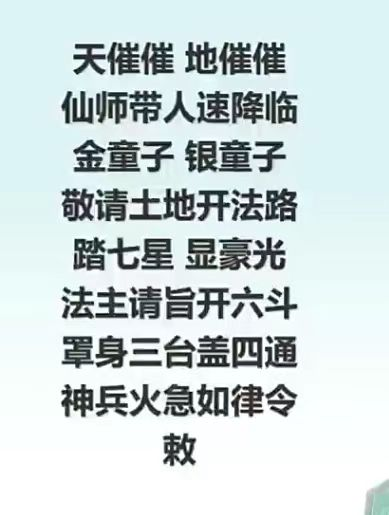
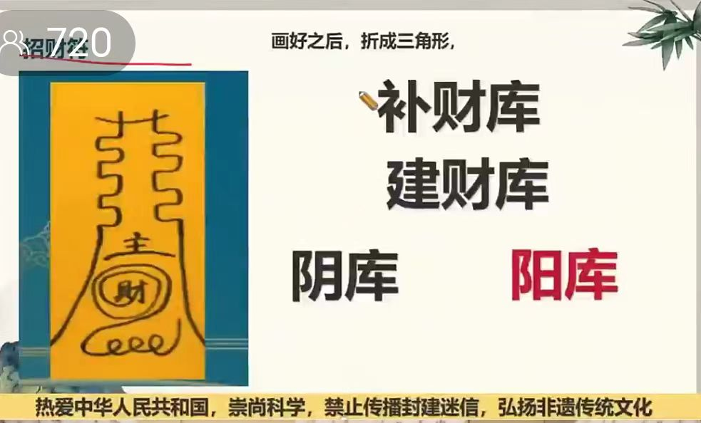

20251127补财库
符咒术法 原始对话记录

买一个铜缸
放在自己家的东方，或者东北方
电视边，冰箱上都行
把符折成三角形，放在缸里
然后，赚一万，就把一百折成三角形放进缸里
赚一百，就把一块，折成三角，放进缸里
年底的时候，把钱全部拿出来
买酒，三瓶水，三样水果，
土地金一份
再买元宝
供奉一下
花不完的钱，捐给寺庙，或者给穷苦人，舍出去
自己一分不能花，
花了这个补财库法事就无效了
以下为编者整理的主题文章
编者整理 · 主题文章
一口铜缸，和一缸不花的钱
导读：做法只有一页：买一口铜缸，放东方或东北方；符折成三角放进去；往后赚一万存一百、赚一百存一块。年底全取出来供一供，剩下的捐出去——自己一分不能花。
做法写得很具体。我照着念一遍。
买一个铜缸。放在自己家的东方，或者东北方。电视边、冰箱上都行。
把符折成三角形，放在缸里。
然后，赚一万，就把一百折成三角放进缸里；赚一百，就把一块，折成三角，放进缸里。
年底的时候，把钱全部拿出来。买酒，三瓶水，三样水果，土地金一份，再买元宝。供奉一下。
花不完的钱，捐给寺庙，或者给穷苦人，舍出去。
最后压了一句：自己一分不能花——花了，这个补财库法事就无效了。
本页另附两段视频，叫《财库咒语》和《握固》。文字只讲怎么做，不讲为什么。这一缸钱，进来的时候按比例，出去的时候要舍掉。记录没有解释这道规矩的道理，只在最后留了那一句。
同类的话散在别处。《祭祖方法》里说，纸钱元宝平时要多烧，别拿几张烧纸，供奉要重；底下有人接一句，"有个对应关系，那边富了这边也富，那边有了，这边也有"。财神节那两则，供的是整鸡、整鱼、方肉、方豆腐。
供出去的，和缸里那份，按记录的说法是一路。
说明与免责：本站为民间修炼、民俗文化与传统文化资料的整理与记录，内容源自传承者口传与个人修习体会，仅供文化交流与研究参考，不构成医疗、健康、投资或任何功效承诺。所述内容属传统术数范畴，请理性看待；如身体不适，请及时就医。请遵守法律法规与公序良俗。